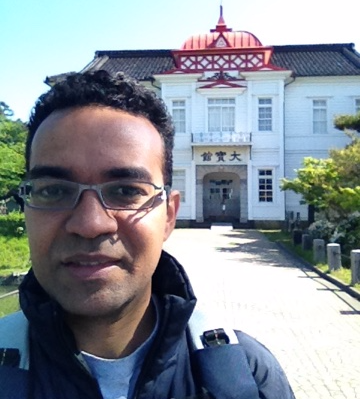

Mohamed Helmy, PhD
Postdoctoral Researcher, Bader Lab
The Donnelly Centre
University of Toronto
Contact Information
160 College Street, Room 630
The Donnelly Centre
University of Toronto
Toronto, Ontario
Canada, M5S 3E1
Map
Email: mohamed.attiashahata[AT]utoronto.ca
Publication
Google Scholar Profile
PROFESSIONAL EXPERIENCES
A. Career
- Senior Postdoctoral Researcher - 2015~Present
University of Toronto, Toronto, ON, Canada
The Donnelly Centre
Professor Gary Bader's Lab
- Postdoctoral Researcher - 2013~2015
University of Toronto, Toronto, ON, Canada
The Donnelly Centre
Professor Gary Bader's Lab
- Visiting Faculty Member - 2013(4)~2013(9)
Al-Azhar University, Cairo, Egypt
Faculty of Agriculture
Department of Biotechnology
- Postdoctoral Researcher - 2012~2013
Kyoto University, Kyoto, Japan
Graduate School of Pharmaceutical Sciences
Department of Molecular & Cellular Bioanalysis
Professor Yasushi Ishihama's Lab
- Project Researcher - 2009~2011
Keio University, Tokyo, Japan
School of Medicine
Global-Center of Excellence (G-COE)
- Research Assistant - 2007~2012
Keio University, Tsuruoka, Japan
Institute for Advanced Biosciences (IAB)
- Demonstrator - 2002~2007
Al-Azhar University, Cairo, Egypt
Faculty of Agriculture
Department of Botany
B. Affiliations
- The Donnelly Centre, University of Toronto (UofT), Toronto, Canada (Current) [2013~Present]
- Grad. School for Pharmaceutical Science, Kyoto University, Kyoto, Japan [2012~2013]
- Japan Society for Promotion of Science (JSPS), Tokyo, Japan [2011~2013]
- School of Medicine, Keio University, Tokyo, Japan [2009~2011]
- Keio University, Tokyo, Japan [2007~2012]
- Institute for Advanced Biosciences (IAB), Tsuruoka, Japan [2007~2012]
- Al-Azhar University, Cairo, Egypt [2002~2007]
- Information Technology Institute, Giza, Egypt [2001~2002]
C. Collaborations
C.1. Universities and Research institutions
- The Hospital for Sick Children (Sickkids)
- Princess Margaret Cancer Centre (PMCC)
- Mount Sinai Hospital - Toronto
- Ontario Institute for Cancer Research (OICR)
C.2. International Projects
- International Cancer Genome Consortium (ICGC)
C.3. Industry
- Gene Effects Inc., (USA)
- Scinapsis Analytics Inc., (Canada)
D. Supervision and Mentoring
I mentored several graduate and undergraduate students in Canada, Japan, USA and Egypt.
- Kentaro Hayashi, Keio University, Japan
- Daiki Yamada, Keio University, Japan
- Mohamed Awad, Al-Azhar University, Egypt
- Sara El-Metwally, Mansura University, Egypt & University of Southern California, USA
- Alex Crits-Christoph, John's Hopkins University, USA (through Google Summer of Code Program)
- Miles Mee, McMaster University, Canada (through Google Summer of Code Program)
- Kevin Kuang, University of Toronto, Canada
- Jean-Marie Servant, Engineering School of Brest, France (through internships at Keio University, Japan)
- Chris Labelle, Engineering School of Brest, France (through internships at Keio University, Japan)
- Mathew Rivet, Engineering School of Brest, France (through internships at Keio University, Japan)
E. Teaching
I taught graduate and undergraduate cources in Keio University, Japan and Al-Azhar University, Egypt.
- 2013: Bioinformatics 255 [Graduate], Biotechnology Department, Al-Azhar University, Egypt
- 2011: Genome Design Biology [Graduate], Inistitute for Advanced Biosciences, Keio University, Japan
- 2002~2007: Plant Taxonomy I [U. Graduate], Botany Department, Al-Azhar University, Egypt
- 2002~2007: Plant Morphology and Anatomy I [U. Graduate], Botany Department, Al-Azhar University, Egypt